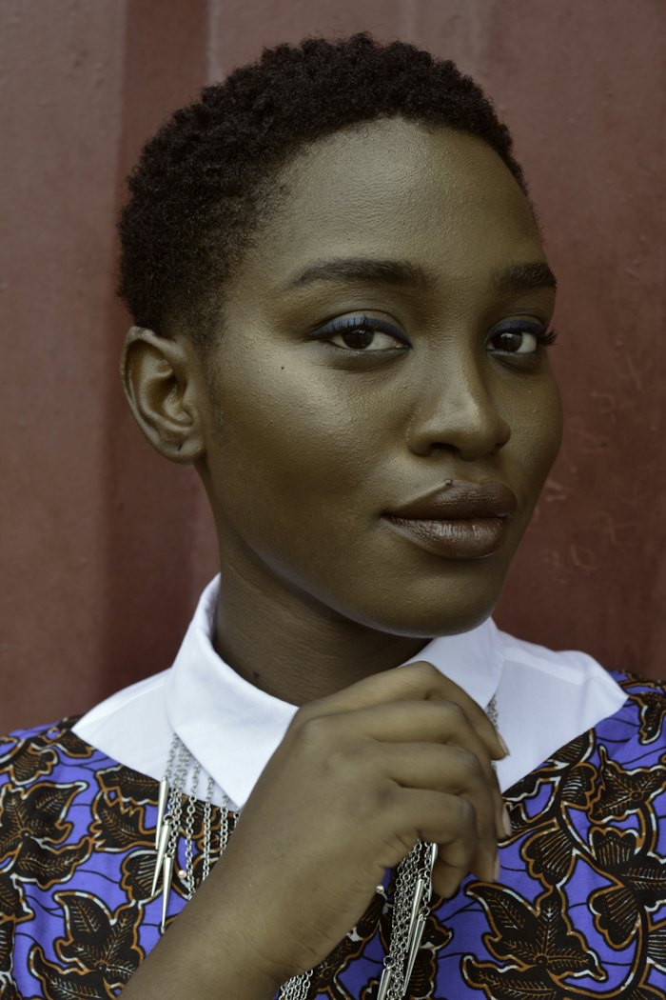

Maya Cohen
Product Designer
Designs learning apps. Likes a soft page, a short sentence, and a photograph that is easy to recognize.
Say helloLesson 01 · Exercise 10
Three short profiles are already written. You turn the stack into a row of cards, then make the contact link look like a button.

Product Designer
Designs learning apps. Likes a soft page, a short sentence, and a photograph that is easy to recognize.
Say helloClassroom Mentor
Helps new developers read a page the way a browser does, one property at a time.
Say helloPhotographer
Makes portraits in natural light and leaves the background quiet so the person stays easy to see.
Say helloThe names are made up for this exercise. The portraits are stock photographs.